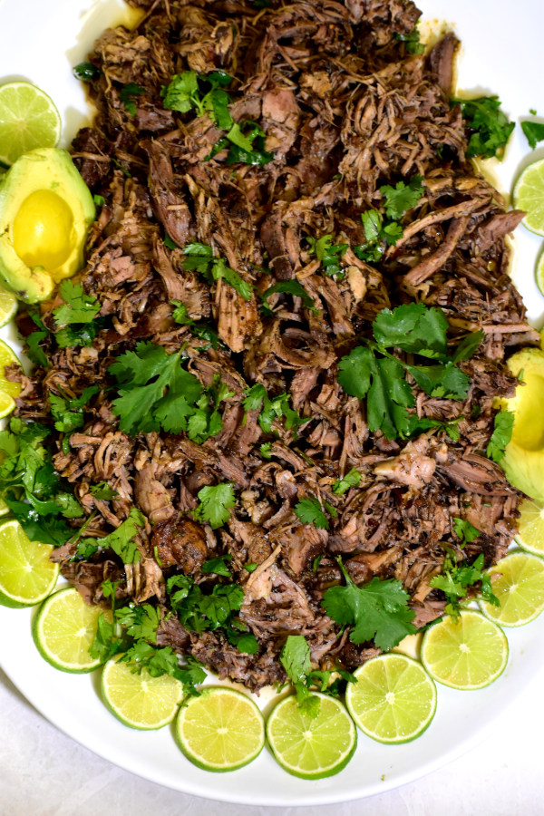

Crock Pot Barbacoa Pork

What is Barbacoa?
Tradtionally, barbacoa is meat, mostly beef or goat or lamb, that is cooked with seasonings and shredded for filling in tacos, burritos or other Mexican dishes. Mexican barbacoa is usually steam cooked in an underground pit/oven, though sometimes it is cooked on open fires, until the meat is tender and succulent. Served with warm corn tortillas, guacamole and salsa.
Ingredients
- 5 lb pork butt roast
- 6-7 chipotle peppers in adobe sauce
- 1 large onion, chopped
- 10-11 cloves, ground
- Whole head of garlic, about 12 cloves
- 1/2 cup apple cider vinegar
- 1/4 cup lime juice
- 1 cup beef broth
- 2 Tbsp cumin powder
- 2 Tbsp oregano
- 4 bay leaves
- 1 tsp black pepper
- 1 tsp salt
- Handful of cilantro, chopped
Instructions
- Heat oil in large pot over med-high heat.Brown meat,about 2-3 minutes per side.(optional)
- Crush cloves with mortar and pestle.
- Blend all sauce ingredients,otherthan bay leaves,in grinder or food processor.(optional)
- Add pork to crock pot and cover with sauce. Cook 8 hours on low or 5 hours on high.
- Shred pork with forks and mix well with sauce.